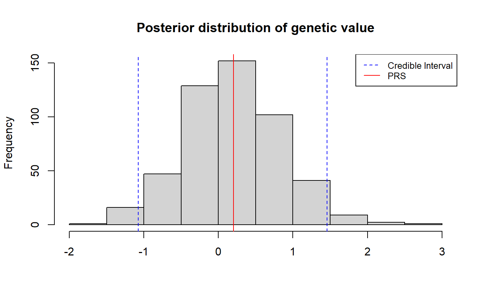

vignettes/prs_uncertainty.Rmd
prs_uncertainty.RmdHere we show how to estimate the full posterior distribution of genetic value using LDpred2 as described in Large uncertainty in individual PRS estimation impacts PRS-based risk stratification.
This tutorial assumes that you have already tuned the hyperparameters using grid search. Please refer to Computing polygenic scores using LDpred2 for tutorials on data preprocessing and LDpred2-grid.
Given the set of tuned hyperparameters (see above), we want to approximate the full posterior distribution of an individual’s genetic value, \(\small{GV_i = \mathrm{\bf{x}}_i^T \boldsymbol\beta}\). From the posterior, one can obtain the posterior mean, \(\small{\widehat{PRS}_i \equiv \mathbb{E}(GV_i|\mathrm{Data})}\), and various metrics of uncertainty such as the posterior variance, \(\small{var(GV_i|\mathrm{Data})}\), where \(\small{GV_i}\) is the genetic value of individual \(i\) and \(\mathrm{\small{Data}}\) refers to a given GWAS, and \(\rho\)-credible interval, the interval within which the individual’s genetic value falls with probability \(\rho\).
An individual’s genetic value is their genotype vector multipled by
the causal effect vector. We therefore need to obtain MCMC samples from
the posterior of the causal effects. This is done by supplying the tuned
hyperparameters (best_param in the example below) to
snp_ldpred2_grid and setting
return_sampling_betas = TRUE. In the example below, we
return 500 MCMC samples from the posterior of the causal effects with
the option num_iter = 500.
Note that, when using return_sampling_betas = TRUE, you
must supply one set of parameters only, i.e. best_param
must be a data frame with exactly 1 row (otherwise it will raise an
error).
best_param <- data.frame(p = 0.01, h2 = 0.2, sparse = FALSE)
posterior_beta_samples <- snp_ldpred2_grid(
corr, df_beta, best_param,
return_sampling_betas = TRUE, num_iter = 500)
dim(posterior_beta_samples)## [1] 45337 500Posterior samples of the individual’s genetic value are then obtained by multiplying their genotype with the posterior samples of \(\boldsymbol{\beta}\).
posterior_gv_samples <- big_prodMat(G, posterior_beta_samples, ind.col = df_beta[["_NUM_ID_"]])
dim(posterior_gv_samples)## [1] 503 500The autocorrelation is generally weak, otherwise, you can perform some thinning.
acf(posterior_gv_samples[1, ], lag.max = 10, plot = TRUE)$acf## , , 1
##
## [,1]
## [1,] 1.000000000
## [2,] 0.124746441
## [3,] 0.108593634
## [4,] 0.048078430
## [5,] 0.008082020
## [6,] 0.002583350
## [7,] -0.013405861
## [8,] -0.029479457
## [9,] 0.004941942
## [10,] -0.002931033
## [11,] -0.002058727## [1] 1.000000000 0.099738287 0.032833478 0.038316768 -0.006360946
## [6] 0.011291062 0.011917135 0.008185207 0.009776595 -0.008539467
## [11] 0.034323505From the posterior samples of genetic value (see above), we can compute summary statistics such as the posterior mean and posterior variance. The posterior mean can be interpreted as the individual’s polygenic (risk) score, i.e. \(\small{\widehat{PRS}_i \equiv \mathbb{E}(GV_i|\mathrm{Data})}\). The posterior variance, \(\small{var(GV_i|\mathrm{Data})}\), is one metric of uncertainty; credible intervals are discussed below.
Another way to quantify uncertainty in an individual’s polygenic score is by constructing a \(\rho\)-credible interval of the individual’s genetic value, i.e. the range of values that contains the individual’s true genetic value with probability \(\rho\).
The example below demonstrates how one can obtain a 95% credible interval of the individual’s genetic value.
rho <- 0.95
bound <- (1 - rho) / 2
samples <- posterior_gv_samples[1, ]
mean <- mean(samples)
lower_ci <- quantile(samples, bound)
upper_ci <- quantile(samples, 1 - bound)
hist(samples, main = "Posterior distribution of genetic value", xlab = NULL)
abline(v = c(lower_ci, mean, upper_ci), col = c("blue", "red", "blue"), lty = c(2,1,2))
legend("topright", legend = c("Credible Interval", "PRS"),
col = c("blue", "red"), lty = c(2,1), cex = 0.8)
To get for all individuals: